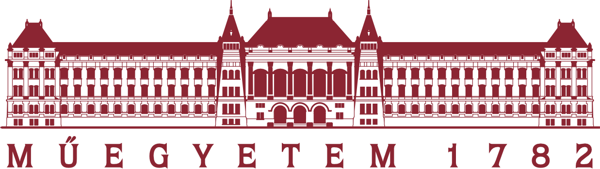

Kezdő oldal
Bemutatkozás
Életem fontosabb mérföldkövei
Portfólióm elkészítése
Életem fontosabb mérföldkövei
Tamási Áron Német Nemzetiségi Gimnázium
Felsőoktatási orientációm eltér a Tamási Német nyelvű profiljától, habár a gimnáziumnak köszönhetően kezdtem az első félévet a Német képzésen. A második félévet már a magyar szakon folytattam, de ennek nem a nyelvi nehézségek voltak az okai. A Tamási Áron Gimnáziumban sikerült megszereznem a DSD 2 (Deutsche Sprach Diplom) Stufe Zwei szintű nemzetközileg elismert Német nyelvvizsgát. Annak érdekében, hogy a nyelvvizsga megszerzése biztos legyen, egy "0." osztállyal kezdődött a Gimnázium, ahol az idegen nyelv alapjait sajátítottuk el.
Milestone Institute
A Milestone Intézet egy olyan program, amely azon középiskolásoknak segít, akik külföldön akarnak továbbtanulni. Továbbá a moduláris oktatásának köszönhetően rendkívül jó arra, hogy megismerd önmagad és választani tudj magadnak pályát, melyet később nem bánsz meg. Nem utolsó sorban mint egy katalizátor lehetővé teszi, hogy diákok által szervezett csoportok jöjjenek létre, ahol megismerhetik egymást a hasonló gondolkodású fiatalok és tovább képezhetik egymást.
Nekem mind a három fő ágból sikerült profitálnom. Habár idén nem külföldön kezdtem meg a tanulmányaimat, széles ismeretre tettem szert a külföldi egyetemek oktatásával kapcsolatban. A moduloknak köszönhetően nem bántam meg, hogy a gépészmérnöki szakot választottam és az innovációs csoport keretein belül megismerkedtem a startup-ok világával, mely még mindig nagyon érdekel. A Milestone saját Startup versenyén sikerült a "Skiassist"-nak nevezett ötletünkkel helyezést elérni, ami miatt egyéb nyeremények között ingyen részt vehettünk a Startup Szafarin. Továbbá motivált a verseny abban, hogy egyéb továbbképzéseken vegyek részt.
Health Venture Lab
A Health Venture Lab (HVL) egy inkubációs program volt vállalkozók számára, melyet a G.E. szponzorált. Ezek a vállalkozók az egészségügy keretein belül kellett, hogy valami újat bemutassanak. A programban két társammal képviseltük az iskolánkat. A HVL-en nagy hangsúlyt fektettünk a "pitch"- elés tudományának elsajátítására, továbbá szó esett a megfelelő kezdő csapat kialakításáról és az effektív kommunikációról, egy startup fontosabb mérföldköveiről és ezek sorrendjéről, ezeknek a részekhez tartozó modellekről vagy eljárási metódusairól, illetve más startuperek is elmondták siker illetve kudarc történeteiket. A program egy kiállítással zárúlt, ahol a vállalkozók munkáját nagybefektetők elé tárták és beszélgetések keretében ismertették. Nekünk 5 percben kellett pichelnünk az ötletünket és ezt értékelték (ez csak a többi iskola résztvevői és a bírák körében történt).
Startupok kapcsán még érdemesnek találom megemlíteni a Hack Yeah nevű Hackathont. Szenzációs élmény volt, melyen képet kaptam arról, hogy hogyan működik egy hackathon és, hogy milyen lehetőségek rejlenek benne. (Akkor még egy sort sem tudtam programozni)
Budapesti Műszaki és Gazdaságtudományi Egyetem

A 2020/2021-es tanévben kezdte meg a tanulmányaimat a BME-nek a Német nyelvű gépészmérnöki szakán. A második félévemet már a magyar képzésen folytattam. Eddig nagyrészben, sajnálatosan, online kellett a tanulnom, így kiemelkedő eredményről vagy élményről mely hozzá tett volna a személyes fejlődésemhez, nem tudok beszámolni, habár az egyetem megismertette velem önmagamat, olyan értelemben, hogy a teherbírásom sokkal nagyobb mint azt akár az érettségi időszak alatt gondoltam volna.
Magyar Látványtánc Sportszövetség

A Magyar Látványtánc Szövetség által megszervezett Európa Bajnokságon Modern Duo-Trio kategóriában, ezen belül junior A kategóriában második helyezést értem el a párommal, illetve formáció, felnőtt A kategóriában Első helyezést értünk el a csapattal. Sajnos mostanára teljesen abbahagytam az online oktatás miatt a táncot, viszont reményeim szerint Szeptemberben újra kezdhetem. Most hobbiból a Hegyvidég klubban focizom.